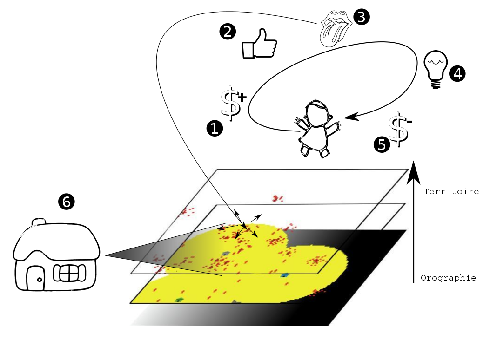
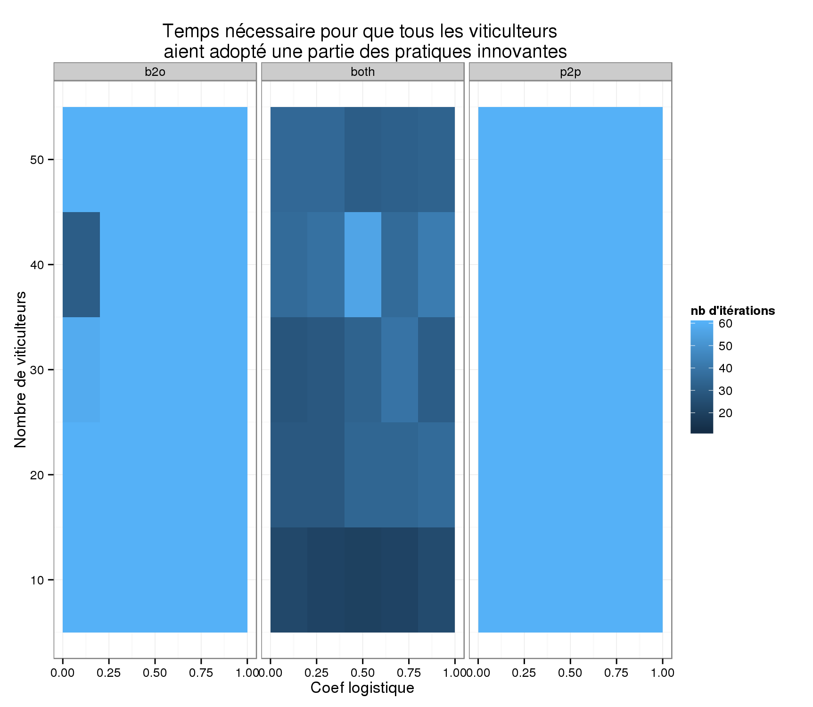
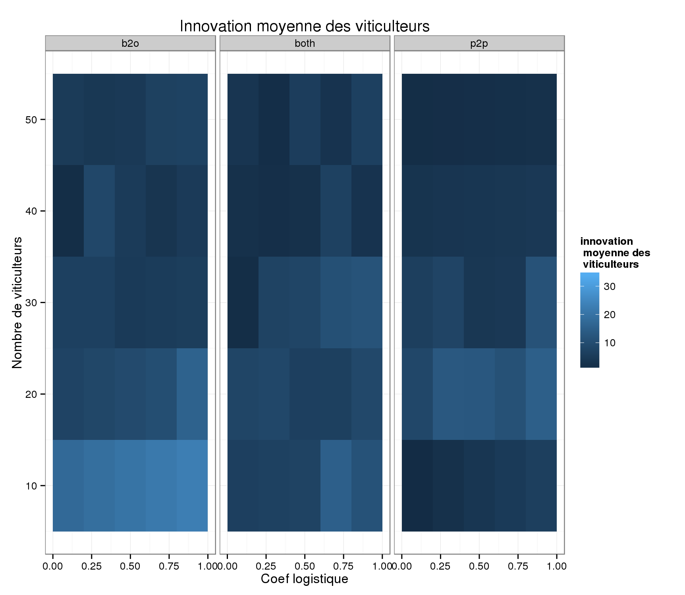

Les territoires viticoles, entre espace d'innovation et innovation d'espaces
Le modèle MASiV : MontAgne Innovation Viticulture
Par
Etienne DELAY / laboratoire GEOLAB UMR 6042 CNRS / Sur twitter : @ElCep
Florian MARCELIN / Laboratoire d’Etudes rurales
Séminaire Workshop In Vino Varietas "Vin, innovation et mondialisation : enjeux et perspectives"
Université Toulouse - Jean Jaurès
le 19 et 20 juin 2014
Introduction
Où allons nous ?
- Observation : de nouvelles pratiques agricoles, écologiques et innovantes
- Questionnement : Comment se diffusent-elles ?
- Outil mis en place : Modélisation de cette diffusion
L'innovation : petite définition
“ l’intégration dans un système social (une entreprise, une organisation, un territoire, une société…) d’une nouveauté qui modifie durablement sa structure ou son fonctionnement ”
J.-M. Touzard - Directeur de Recherche INRA
Les terrains d'étude (1)
La Drôme et le Vaucluse
Vallée du Rhône méridionale : une viticulture bio et biodynamique en plein essor
Les terrains d'étude (2)
L'AOC cru Banyuls
Banyuls : un vignoble sous forte contrainte orographique
Sur le terrain
- Enquêtes, entretiens, observations sur les deux territoires d’étude
- Auprès de viticulteurs en bio / biodynamie essentiellement
- Mais aussi auprès d’institutionnels (Chambre Agriculture, Collectivités, Enseignement agricole, …)
Données recueillies
- diffusion autour de « foyers », de personnes
- développement horizontal de ces modes culturaux
- importance de chaque nouveau vigneron (comme agent de diffusion) qui intègre peu ou en totalité ces pratiques
- propagation par « contamination » par vision et/ou discussion
Le contexte de modélisation
La modélisation
“un modèle est une abstraction qui simplifie le système réel étudié [...], pour se focaliser sur les aspects qui intéressent le modélisateur”
P. Coquillard et D.R.C. Hill 1997
“un modèle a pour fonction d'être un instrument de facilitation d'une médiation”
M.S. Morgan et M. Morrison 1999
Dans cette lignée nous avons :
- travaillé sur un monde et des sociétés virtuels
- réduit le système à des interactions essentielles
Un point sur la modélisation (1)
Traduction des observations en mécanismes : Construction d’un environnement
- Un monde viticole statique
- Un facteur temps favorable
- Prise en compte d’autres variables (géographiques, économiques)
Un point sur la modélisation (2)
Traduction des observations en mécanismes : Positionner des viticulteurs dans cet espace créé
- Importance des viticulteurs comme agent de diffusion
- Distinction entre vision et discussion
- Une innovation par palier
- Capital de resistance des vigneronsTraduction des observations en mécanismes :Construction d’un environnement
Matériel et méthodes
Les systèmes multi-agents (SMA) : définition
“Un agent est une entité physique ou virtuelle
- capable d'agir dans un environnement
- mue par un ensemble de tendances (sous forme d'objectifs)
- capable de percevoir (de manière limitée) son environnement
- dont le comportement tend à satisfaire ses objectifs”
J. Ferber 1995
crédit photo : Y tambe in wikimedia commons{kind=link}
En deux mots... les objets en présence
|  |
|
En deux mots... les interactions
|
En deux mots ... qu'est-ce qu'on a mis derrière ?
la minute logiciel libre
- un modèle multi-agents sur Netlogo
- une analyse de sensibilité avec OPENMOLE sur CALI (20 simulations)
- une exploration des résultats en cours avec R
 crédit image : GNU fondation
crédit image : GNU fondation
Quelques résultats
Entre plaine et Montagne
En montagne
Sur CALI
Variation temporelle
Sur CALI
Innovation moyenne par viticulteur
Conclusion
WORK IN PROGRESS

- Un modèle théorique
- Exploration des processus d'adoption/acceptation de l'innovation : "plausibilité de principe"
- Et les réseaux sociaux ?